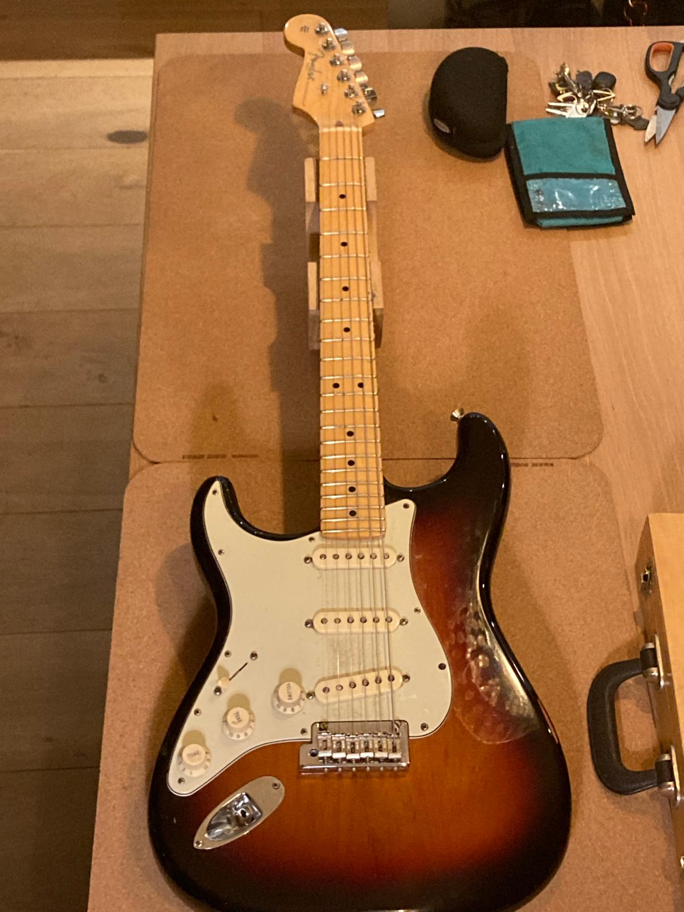
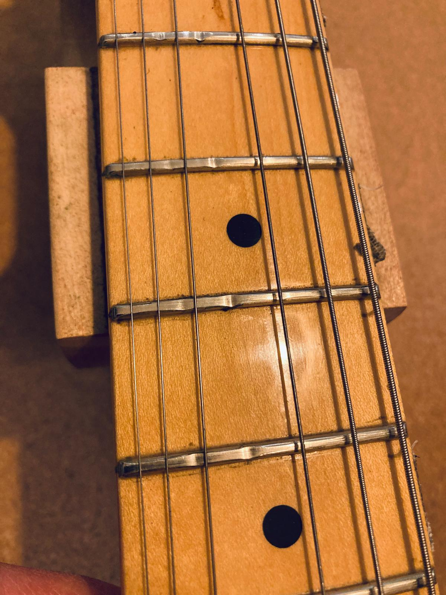
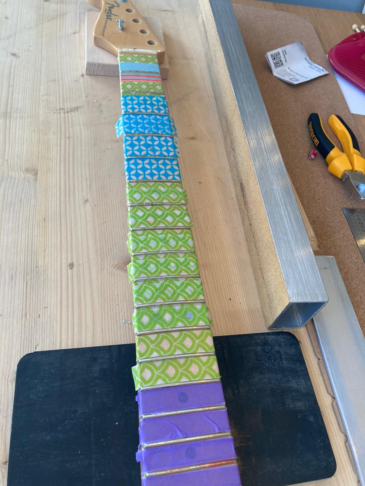

Fretwerk
Voorbeeld van het vlakken, crownen en polijsten van frets.
Deze Fender Stratocaster lefty had, na jaren spelen, versleten frets met name op de G en B. De vraag was of een complete refret nodig was maar dat viel mee, de slijtage was niet te diep. Gekozen is voor een fret leveling. Daarbij worden alle frets licht gevlakt, zodat de slijtplekken verdwijnen en het hele fretvlak weer egaal wordt. Vervolgens zijn de frets gecrowned (afgerond) en daarna gepolijst, waarna de hals weer als nieuw is. Hiervoor moet wel de hals van de gitaar af en wordt de toets beschermd met tape dat niet te sterk plakt zodat de lak niet losgetrokken wordt bij het verwijderen. Als je dan nog een kleine voorraad washi tape hebt, is dat prima en best vrolijk.
"Speelt prima, blij mee!"


